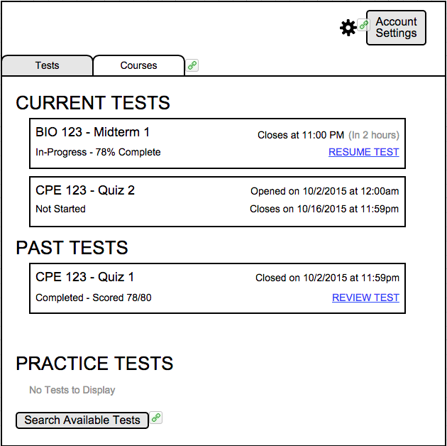
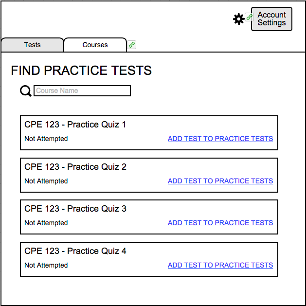

To run a search on available Practice exams, the user will click the "Search Available Tests" on the Courses screen, as shown in Figure x3.

Figure x3: The "Search Available Tests" button, in the "Practice Tests" section.

Figure x4: The screen where the user finds a practice test and adds it to his or her own current tests.